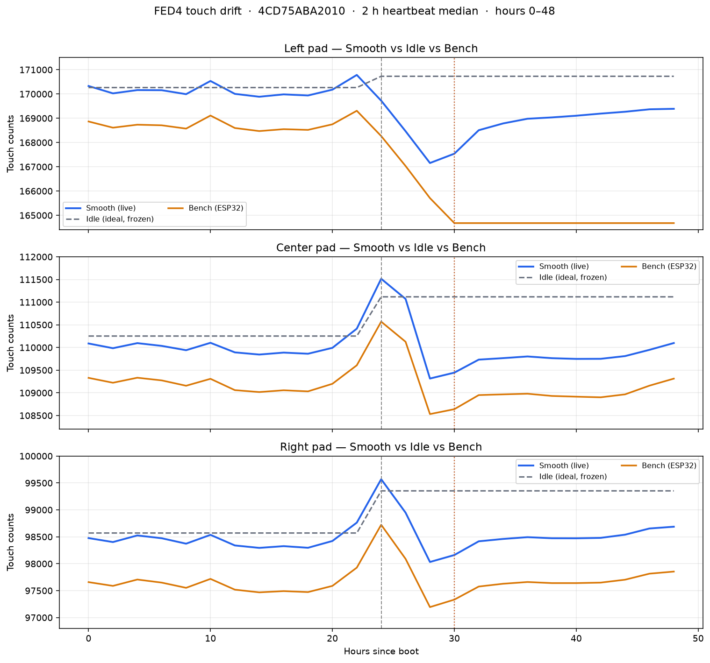
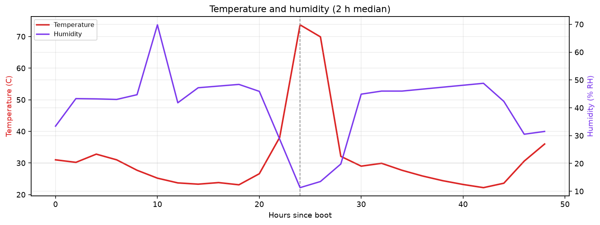
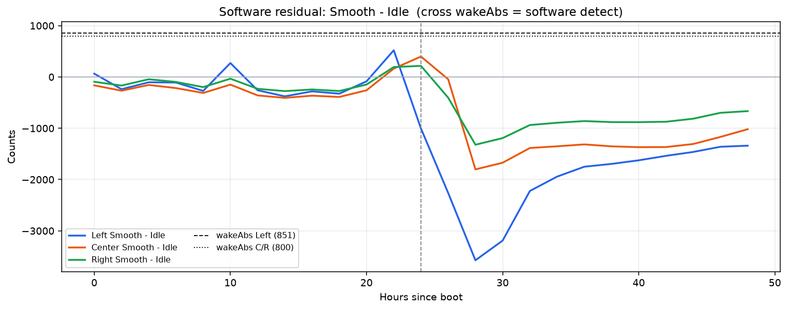
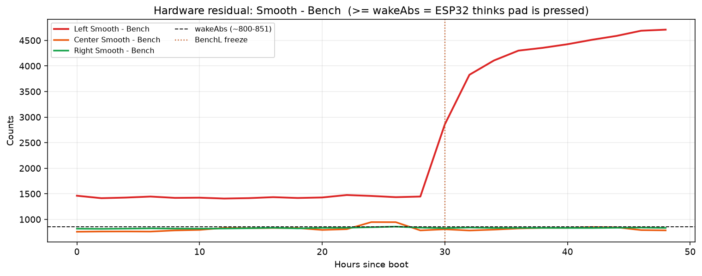
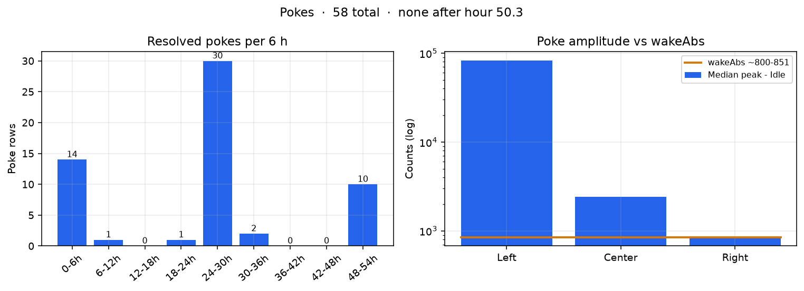
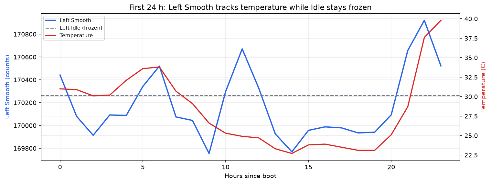

Device 4CD75ABA2010, firmware 1.7.0, LightSleep, 5–8 Sep 2026. Heartbeat 2-hour medians, hours 0–48 (before the FSM freeze). Source: FED4_0000_20260905_00_T.CSV.

Gray dashed = frozen Idle. Orange = ESP32 Bench. Left Bench sticks at hour 30.

Heat spike near hour 24 is what moves touch counts. Overnight humidity does not.

Stays below wakeAbs until the heat/rechar, then goes negative.

Left is already above wakeAbs from t=0; gap explodes after Bench freezes at hour 30.

58 pokes total; none after hour 50.3.

Same daily shape. Idle stays frozen at 170,264.